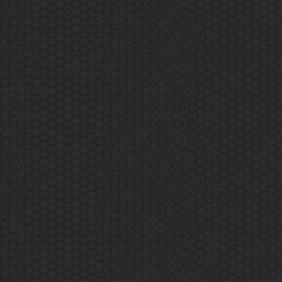

// Setting the cube as the target for button being pressed
var targetCube = document.querySelector('#cube');
// When the button is pressed, change the cube to a random color.
// var mybutton = document.querySelector('#mybutton');
// mybutton.addEventListener('pressed', function () {
// var randomHexColor = Math.floor(Math.random() * 0xffffff).toString(16);
// targetCube.setAttribute('material', {
// color: '#' + randomHexColor
// });
// });